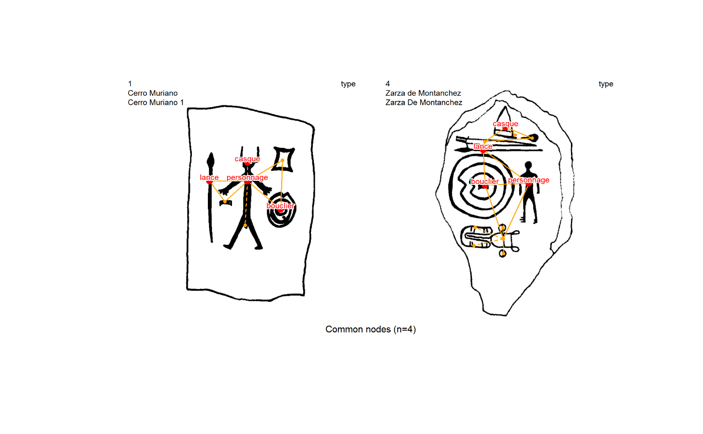
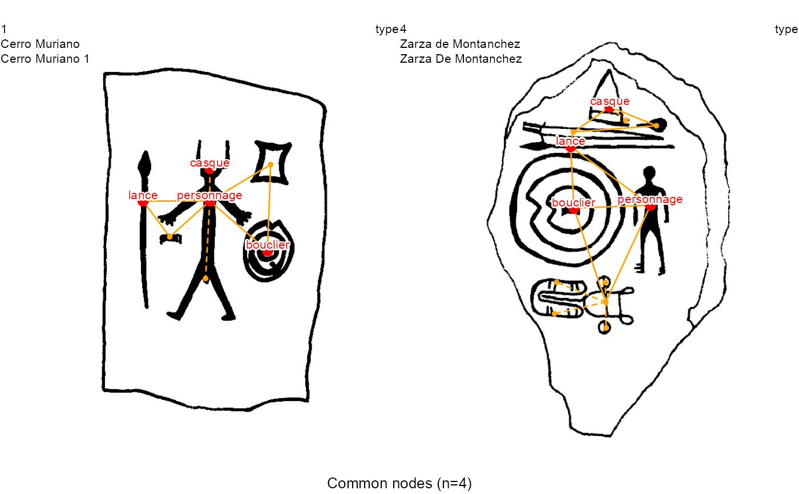

plot_compar.RdGiven a list of pairwise graph comparisons, the function plots any given subset selected by graph name, displaying side-by-side pairs of graphs and highlighting common nodes or common edges with a choice of several graphical parameters.
plot_compar(listg, dec2comp = NULL, focus = "nodes", dir = getwd(), nd.color = c("orange", "red"), nd.size = c(0.5, 1), ed.color = c("orange", "red"), ed.width = c(1, 2), lbl.size = 0.5, dir.out = dir, out.file.name = NULL, img.format = NULL, res = 300)
| listg | A list of graph pairwise comparisons as returned by |
|---|---|
| dec2comp | A vector with the names of the graphs for which comparisons are to be plotted. The user can select to plot all pairwise combinations (by default), all combinations of a subset, or a single pair. |
| focus | Either |
| dir | Data folder including the decoration images. By default the working directory. |
| nd.color, nd.size, ed.color, ed.width | Graphical parameters for color and size/widths of nodes and edges.
Each of them is a vector with two values for different and common nodes/edges, respectively.
If only one value is provided, this unique value is taken for both different and common elements.
Labels are displayed with the same color as common nodes.
For |
| lbl.size | Graphical parameter for the size of the labels with the node names. The default is 0.5. |
| dir.out | Folder for the output image. By default, it coincides with the input |
| out.file.name | Name of the output image, including path from current directory and extension.
By default the name is automatically generated including If set, |
| img.format, res | Format and resolution of the saved images. The handled formats are
if |
To highlight common elements between a list of graphs, the user can focus on nodes (focus = "nodes") or edges (focus = "edges"). As stated in the function list_compar, for a given comparison variable (eg. nd.var="type") if there is multiple nodes/edges with the same value, it is considered to count for as many coincidences as the smaller multiplicity.
img.format=NULL (plot to the active device) does not make sense for
more than one comparison.
Generates graph decoration images, for pairwise comparisons between two or more decorations, comparing graphs elements (nodes or edges).
If img.format=NULL, the plot is sent to the active device and no value is returned.
If img.format= "png" or "bmp" or "tiff"/"tif" or "jpeg"/"jpg" or "pdf", the return value is a character vector with the dir/name of every saved image in the indicated format.
# Read data imgs <- read.table(system.file("extdata", "imgs.tsv", package = "iconr"), sep="\t",stringsAsFactors = FALSE) nodes <- read.table(system.file("extdata", "nodes.tsv", package = "iconr"), sep="\t",stringsAsFactors = FALSE) edges <- read.table(system.file("extdata", "edges.tsv", package = "iconr"), sep="\t",stringsAsFactors = FALSE) # Generate list of graphs from the three dataframes lgrph <- list_dec(imgs, nodes, edges) # Generate all pairwise comparisons of the graphs with respect to nodes "type" g.compar <- list_compar(lgrph, nd.var="type") # Generate the image showing the comparison on common nodes of graphs # '1' and '4', save it in png format, and return its path. dataDir <- system.file("extdata", package = "iconr") outDir <- tempdir() plot_compar(g.compar, c(1,4), focus = "nodes", dir = dataDir, dir.out = outDir, img.format = "png")#> [1] "C:\\Users\\SUPERN~1\\AppData\\Local\\Temp\\RtmpyQanNF/_compar_nds_1_4.png"# Generate the image showing the comparison on common edges of all pairwise # combinations of graphs '1','3', and '4', save them in pdf format, and return # their path. # Plot nodes involved in non-common edges in orange and # nodes involved in common edges and the corresponding labels in brown. plot_compar(g.compar, c(1, 3, 4), focus = "edges", dir = dataDir, nd.color = c("orange", "brown"), dir.out = outDir, img.format = "pdf")#> [1] "C:\\Users\\SUPERN~1\\AppData\\Local\\Temp\\RtmpyQanNF/_compar_eds_1_3.pdf" #> [2] "C:\\Users\\SUPERN~1\\AppData\\Local\\Temp\\RtmpyQanNF/_compar_eds_1_4.pdf" #> [3] "C:\\Users\\SUPERN~1\\AppData\\Local\\Temp\\RtmpyQanNF/_compar_eds_3_4.pdf"# Save the png image showing the comparison on common nodes of graphs # '1' and '4'. # Then read and plot the image. img.filename <- plot_compar(g.compar, c(1, 4), focus = "nodes", dir = dataDir, dir.out = outDir, img.format = "png") plot(magick::image_read(img.filename))# Plot directly on the active device (default) the comparison on common nodes # of graphs '1' and '4'. plot_compar(g.compar, c(1, 4), focus = "nodes", dir = dataDir)